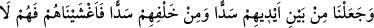
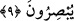
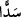
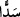
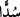
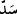
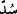

Bir adamı arı sokarsa
Tabiatı, derhal o kötülüğü gidermek için uğraşmaya başlar.
Bu da arı sokmasıdır ama, senden meydana gelmedir.
Böyle olunca da gam kuvvetlenir, illet bir türlü geçmez.
(Nimetullah) Nakşibendî der ki: “Bu halkalar, boş kuruntu ve emellerin halkaları;
alçak dünyanın yaldızlarına hırs ve tamah zincirleri ve bunlara dayanan vehmî lezzetler
ve hayvânî şehvetlerdir.”
9. Önlerinden bir set ve arkalarından bir set çektik de onları kapattık, artık
göremezler.
Onlara, Mekke halkının çoğuna gazabımızın kemâlinden dolayı “Önlerinden bir set”
bir duvar ve perde “ve arkalarından bir set” perde ve mâni “çektik” yarattık da
“onları kapattık” gözlerini örttük ve üzerine perde koyduk “artık göremezler.” Çünkü
kendisini her taraftan perdenin kuşattığı kimse hiçbir şey göremez. Anlaşılan o ki burada
murad edilen yalnız ön ve arka taraf değildir. Bilakis bu kuşatma bütün yönlere
şâmildir. Ancak ön taraf diğer yönlerden daha önemli ve daha belirgin olduğu arka taraf
ise ön tarafın zıddı olması hasebiyle bu iki yön zikredilmiştir.
“
” kelimesini kıraat imamlarından Hafs, “
” diye, diğer kıraat imamları “
” diye
okumuşlardır. İkisi de aynı mânâyadır. İnsanların yaptıklarından olanın “ ”, Allah’ın
yaratmasından olanların ise “ ” olduğu da söylenmiştir.
Bu âyet ya önceki âyetteki temsilin tamamlayıcı ve mükemmel bir bütünleyicisidir.
Yâni yukarıda zikredilenlerin yanında biz onların önlerinden çok büyük bir sed ve aynı
şekilde arkalarından bir sed çektik. Bu iki sedle onların gözlerini örtüp kapattık. Bu
yüzden onlar asla hiçbir şeyi görmeye muktedir olamazlar. Ya da bu âyet müstakil bir
temsildir. Çünkü onların gözleri bağlı, perdeli ve kapalı olarak asla hiçbir şeyi göremez
bir halde böyle korkunç iki set arasında mahsur kalmış olmaları, delil ve âyetleri
düşünmekten mahrum olarak azgınlık ve cehâletin karanlık, meçhul, derin ve dipsiz
kuyularında mahpus kalmaları konusundaki vahim ve dehşetli durumlarını ortaya koyma
konusunda yeterlidir.
İmam (Râzî) der ki: “Âyet ve delilleri düşünmeye mâni olan şey iki kısımdır: Birinci
kısım nefislerinde, kendilerinde olan âyetleri düşünmeye engeldir. Bu, takıldığı kişinin
kendini ve bedenini göremeyecek şekilde başını kalkık vaziyete getiren demir halkaya
benzetilmiştir. İkinci kısım ufuklarda/dış dünyadaki âyetleri düşünmeye engeldir. Bu
durum ise kişiyi her yönden kuşatan sedde benzetilmiştir. Çünkü demir halkalarla elleri